▲ 도심 도로 위의 검은색 기아 EV3 GT-라인. 국내 시승기 상당수가 GT-라인 19인치 휠 사양으로 진행됐다 ⓒ Damian B Oh, Wikimedia Commons (CC BY-SA 4.0)
기아 EV3는 2026년 8월 한 달에만 3,174대가 팔려 국내 전기차 판매 상위권에 올랐다. 그런데 EV3를 알아보는 사람이 가장 많이 묻는 건 따로 있다. 인증 주행거리 501km를 실제로도 달리느냐는 것이다.
카프리즘은 이 질문에 답하려고 국내외 시승기와 실측 테스트 14편(13개 매체)을 모았다. 국내는 오토뷰·탑라이더·블로터·더팩트, 해외는 Autocar·Top Gear·Auto Express·Electrifying·Carwow·Carbuyer·The Drive에 노르웨이 NAF와 스웨덴 CarExplorers의 겨울 실측까지 포함했다. 우리가 직접 시승한 기사가 아니라, 여러 매체가 측정하고 평가한 내용을 한자리에 모아 비교한 종합 기사다. 가격과 보조금 계산은 이미 다룬 기사가 있어서 이번에는 숫자로 드러난 실제 주행 성능에 집중했다.
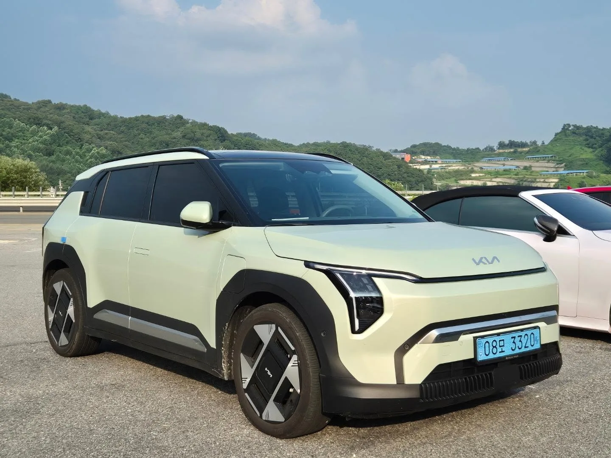
▲ 국내 번호판을 단 기아 EV3. 차체 길이는 4,300mm, 휠베이스는 2,680mm다 ⓒ Avante2025, Wikimedia Commons (CC BY 4.0)
1. 매체 13곳은 EV3를 어떻게 평가했나
EV3 국내 미디어 시승회는 2024년 7월 서울 성수동에서 속초까지 달리는 코스로 열렸다. 그래서 국내 매체 시승기는 대부분 한여름 조건이다. 해외 매체는 2024년 말부터 2026년까지 영국 사양(58.3kWh·81.4kWh)을 중심으로 장기간 평가했다. 매체마다 시승한 모델과 계절이 다르기 때문에, 아래 표에는 각 매체가 탄 모델을 함께 적었다.
| 매체(게재) | 시승 모델 | 좋았던 점 | 아쉬운 점 |
|---|---|---|---|
| 오토뷰 (2024.8) | 롱레인지 | 기아 전기차 가운데 핸들링과 승차감의 균형이 가장 좋고, 스마트 회생제동이 완전 정차까지 처리 | 가속 페달 반응이 둔하게 세팅됐고, 차로 유지 보조가 차선 안에서 좌우로 흔들림 |
| 탑라이더 (2024.7) | 롱레인지 GT-라인 19인치 | 실내 소재·디자인, 정숙성, 넉넉한 실주행거리 | 100km/h를 넘기면 차체 움직임이 많아지고, 트렁크 상하 높이가 낮으며, 긴급회피조향 보조가 자주 개입 |
| 블로터 (2024.7) | 롱레인지 어스 19인치 | 인증치를 크게 웃돈 전비, 조용하고 부드러운 승차감 | 800V 초급속 충전을 지원하지 않음, 충전구 위치 |
| 블로터 (2024.10) | 어스 풀옵션 19인치 | i-페달 3.0 원페달 주행, 앞차 종류까지 보여주는 HUD | 주변 차량 인식 표시 범위가 좁음, 초기 ICCU·디스플레이 결함 보고 |
| 더팩트 (2024.7) | GT-라인 롱레인지 | 공간 활용도, 보조금 적용 후 가격 | 밤에 앰비언트 조명이 사이드미러에 비침, AI 비서 답변이 얕음 |
| Autocar (영국) | 롱레인지 GT-라인 로드테스트, 스탠다드 비교 시승 | 동급에서 큰 배터리, 쓰기 쉬운 인포테인먼트, 넓은 공간, 회생제동 조절. 2025 Autocar 어워즈 '베스트 전기차' | 운전자 보조(ADAS) 보정이 미흡하고, 효율은 평범하며 운전이 밋밋함 |
| Top Gear (영국) | 영국 사양 | 효율적이고 실용적이며 운전하기 쉬운 전방위 완성도 | 운전자 보조 경고가 지나치게 잦고, 터치 메뉴가 번거로움 |
| Auto Express (2026.7) | 81.4kWh GT-라인 · 4.5/5 | 긴 주행거리, 넓은 트렁크, 속도를 가리지 않는 편안한 승차감 | 운전 재미가 적고, 트렁크를 키운 대신 뒷좌석 편안함은 양보 |
| Electrifying (2026.9) | 전 라인업(GT 포함) · 10/10 | 주행거리, 가성비, 뛰어난 i-페달과 승차감 | 경쟁차보다 급속충전이 느리고, 프렁크가 작아 케이블 수납이 빠듯 |
| Carwow (2026.7) | 영국 사양 · 9/10 | 성인 두 명이 편한 뒷좌석과 평평한 바닥, 부드러운 승차감 | 거친 노면이 이어지면 차체가 출렁이고, 일부 저가 소재와 잦은 경고음 |
| Carbuyer (2025.1) | 영국 사양 · 4.5/5 | 주행거리, 편의장비가 많은 넓은 실내 | 운전 감각이 무디고 딱딱한 플라스틱이 쓰였으며, 뒷좌석에 카시트 3개는 무리 |
| The Drive (2024.9) | 국내 사양 기본형 | 잘 다듬은 댐핑, 고속 정숙성, 실내 품질 | 400V라 급속충전 속도에 한계가 있고, 스티어링 감각이 부족 |
| NAF El Prix (2025 겨울) | 롱레인지 | 주행거리 기준 24대 중 공동 3위로, 300마일(약 483km)을 넘긴 4대 가운데 하나. 전비 16.2kWh/100km로 24대 중 두 번째 | WLTP(590km)보다 약 15% 짧게 달림 |
| CarExplorers (스웨덴 겨울) | 롱레인지 FWD | 영하 3℃·80km/h 기준 약 406km, 최대 135kW까지 평탄한 충전 곡선 | 120km/h에서는 약 327km로 줄어듦 |
한 줄로 모으면 이렇다. EV3는 "무엇이든 무난하게 잘하는 차"로 평가받는다. Top Gear는 EV3를 두고 예전 골프처럼 "roundly, crushingly competent(전방위로 압도적인 완성도)"라고 썼다. Carwow는 "impossible not to recommend it as an electric family car(패밀리 전기차로 추천하지 않을 수 없다)"라고 결론 내렸다. 국내에서는 탑라이더가 "EV3는 기아가 작정하고 만든 티가 나는 완성도 높은 전기차다"라고 평가했다. 반대로 운전 재미를 기대한 매체들은 하나같이 평범하다고 봤다.
2. 칭찬과 지적, 매체들은 얼마나 같은 말을 했나
위 14편에서 반복해 나온 평가를 항목별로 묶어 합의도를 매겼다. '높음'은 해당 항목을 다룬 매체 대부분이 같은 방향으로 평가한 경우, '엇갈림'은 매체마다 평가가 반대로 나온 경우다.
| 항목 | 칭찬한 매체 | 지적한 매체 | 합의도 |
|---|---|---|---|
| 주행거리·전비 | Auto Express, Electrifying, Carwow, Autocar, 블로터, 더팩트, 탑라이더, NAF | Autocar(효율은 평범) | 높음 (칭찬) |
| 승차감·정숙성 | Auto Express, Electrifying, The Drive, 오토뷰, 블로터, 탑라이더 | Carwow(연속 요철), 더팩트(한쪽 바퀴 요철), 탑라이더(100km/h 이상) | 대체로 칭찬 |
| i-페달(회생제동) | Auto Express, Electrifying, Autocar, 오토뷰, 블로터 | 없음 | 높음 (칭찬) |
| 실내·트렁크 공간 | Carwow, Electrifying, Auto Express(트렁크), 더팩트 | Auto Express(뒷좌석), Carbuyer(카시트 3개), 탑라이더(적재 편의) | 대체로 칭찬 |
| 운전 재미·스티어링 | 오토뷰(기아 EV 중 균형 최상) | Auto Express, Carbuyer, Autocar, The Drive | 높음 (지적) |
| 급속충전 속도 | CarExplorers(평탄한 곡선) | Electrifying, The Drive, 블로터(400V) | 대체로 지적 |
| 경고음·운전자 보조 | 블로터(HUD) | Autocar, Top Gear, Carwow, 오토뷰(차로 유지), 탑라이더(긴급회피조향) | 대체로 지적 |
| 실내 소재 | 탑라이더, The Drive | Carwow, Carbuyer | 엇갈림 |
눈에 띄는 대목은 승차감이다. 칭찬이 많지만 지적도 구체적이다. 부드럽게 세팅한 서스펜션이 한 번의 요철은 잘 삼키는데, 거친 노면이 이어지면 출렁임이 남는다는 것이다. Top Gear는 포트홀이 많은 길이라면 휠이 작은 기본 트림(Air)이 낫다고 봤다. 국내에서도 19인치 GT-라인을 탄 탑라이더가 고속 안정감을 아쉬워했다. 휠 크기가 승차감과 주행거리 모두에 영향을 준다는 점은 트림을 고를 때 참고할 만하다.
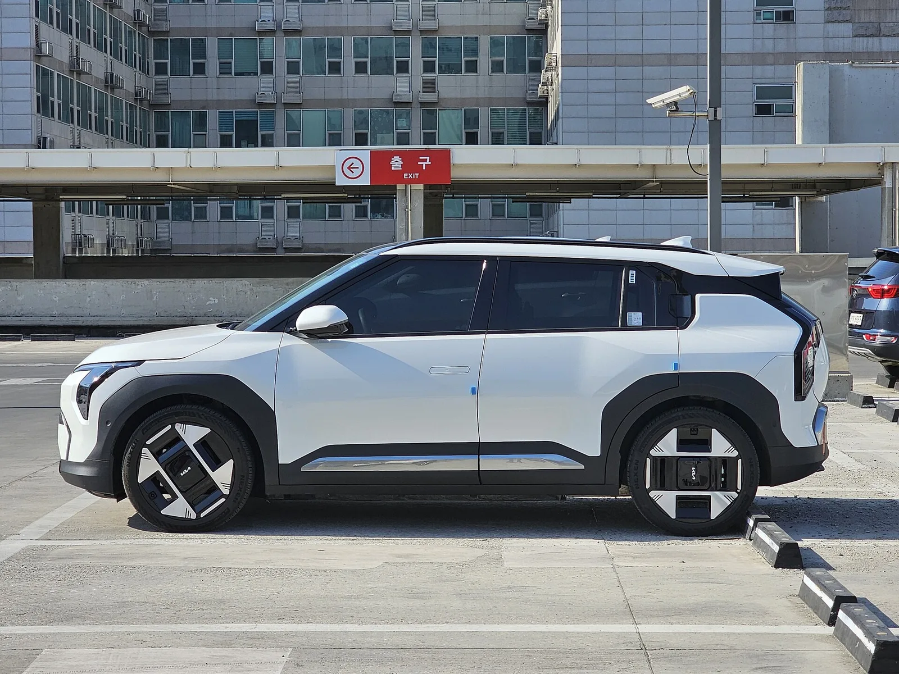
▲ 측면에서 본 흰색 EV3 어스. 공기저항계수는 0.26으로 알려졌다 ⓒ Damian B Oh, Wikimedia Commons (CC BY-SA 4.0)
3. 인증 주행거리 vs 매체 실측 주행거리
이 기사의 핵심 질문이다. 먼저 인증 기준부터 구분해야 한다. 국내 인증(환경부·산업부), 유럽 WLTP, 미국 EPA는 측정 방식이 달라서 숫자를 그대로 비교하면 안 된다. 같은 롱레인지 2WD라도 국내 인증은 501km(17인치), 유럽 WLTP는 약 560~605km(시장·휠 사양별 차이, 노르웨이 NAF 시험차 590km·영국 375마일), 미국 EPA는 321마일(약 517km, 2027년형 81.4kWh FWD)이다. 일반적으로 WLTP가 가장 후하고, 국내 인증과 EPA는 그보다 보수적이다.
| 구분 | 스탠다드 58.3kWh | 롱레인지 81.4kWh 2WD | 기타 |
|---|---|---|---|
| 국내 복합(17인치) | 350km (19인치 347km) | 501km | 롱레인지 19인치 2WD 478km, 4WD 450km, GT(20인치) 410km |
| 국내 도심 / 고속도로 | 380km / 313km | 545km / 447km | — |
| 국내 인증 전비 | 5.2km/kWh | 5.4km/kWh | 19인치 2WD 5.1, 4WD 4.8, GT 4.3km/kWh |
| 국내 저온 복합(영하 6.7℃ 이하) | 공식 자료 미확인 | 401km (19인치 382km) | 2024년 5월 환경부 KENCIS 공개치(블로터 보도) |
| 영국 WLTP | 약 270마일(약 435km) | 375마일(약 603km) | 유럽 사양 |
| 미국 EPA(2027년형) | 221마일(약 356km) | 321마일(약 517km) | AWD·GT 280마일(약 451km) |
이제 매체들이 실제로 달린 결과를 보자. 전비(km/kWh)만 공개한 매체는 배터리 용량 81.4kWh를 곱해 단순 환산했다. 실제로 쓸 수 있는 용량과 완충·완방 여부에 따라 결과는 달라질 수 있으니 참고치로 보면 된다.
| 매체 | 조건 | 실측 | 주행거리(환산) |
|---|---|---|---|
| 블로터 | 여름, 서울~속초 약 200km, 도심·고속·산길 혼합, 19인치 | 7.3km/kWh | 약 594km(환산) |
| 더팩트 | 여름, 서울~속초 약 200km, 에코 모드, 경사 10% 산길 포함 | 6.8km/kWh (행사 최고 7.9) | 약 553km(환산) |
| 블로터 | 가을, 서초~킨텍스 왕복 100.4km 도심·교외, i-페달 사용 | 7.3km/kWh | 약 594km(환산) |
| 오토뷰 | 고속도로 100km/h 정속 | 5.1~5.3km/kWh | 약 415~431km(환산) |
| Autocar | 영국, 기온 약 10℃, 일상 주행 | 평균~일상 주행 기준 | 265~304마일(약 426~489km) |
| Auto Express | 영국 한파 속 주행 | 3.3mi/kWh | 약 270마일(약 435km) |
| NAF El Prix(노르웨이) | 2025년 1월, 영하 6~7℃, 실내 21℃·성인 2명, 실도로에서 배터리 소진까지 | WLTP 590km 대비 -14.6% | 약 500km(Carscoops 310마일≈499km, 오토헤럴드 504km) |
| CarExplorers(스웨덴) | -3℃, 80km/h, 실내 21℃ 유지 | 19.2kWh/100km | 약 406km |
| CarExplorers(스웨덴) | 5℃, 120km/h, 실내 21℃ 유지 | 23.8kWh/100km | 약 327km |
📍 표에서 읽히는 세 가지
① 국도·도심에서는 인증치를 넘는다. 여름철 국도와 도심을 섞어 달린 국내 시승(대부분 19인치 휠)에서는 전비가 6.8~7.3km/kWh로, 19인치 롱레인지 인증 복합 전비(5.1)보다 33~43% 높게 나왔다. 속도가 낮고 i-페달로 회생제동을 많이 쓸수록 유리하다.
② 고속도로에서는 국내 '고속도로 인증치'가 현실에 가깝다. 오토뷰의 100km/h 정속 결과(약 415~431km)는 국내 인증 고속도로 주행거리 447km와 비슷했다. 장거리 여행 계획은 복합 501km가 아니라 447km를 기준으로 잡는 편이 안전하다. 속도를 120km/h까지 올리면 300km대 초반까지 떨어진다(CarExplorers).
③ 겨울에도 버티는 편이다. NAF 테스트에서 EV3는 WLTP 대비 감소 폭이 14.6%로, 함께 시험한 한국 전기차 가운데 가장 작았다(아이오닉5는 19.4%, 오토헤럴드 보도). 100km당 전력 소비도 16.2kWh로 테슬라 모델3 다음이었다. NAF 결과를 전한 Carscoops는 "in the electric world, bigger isn't always better(전기차 세계에서 크다고 늘 좋은 건 아니다)"라고 평했다. 다만 이 수치는 영하 20℃ 아래의 혹한이 아니라 영하 6~7℃에서 나온 결과다. 국내 저온 인증치(401km)도 함께 참고해야 한다.
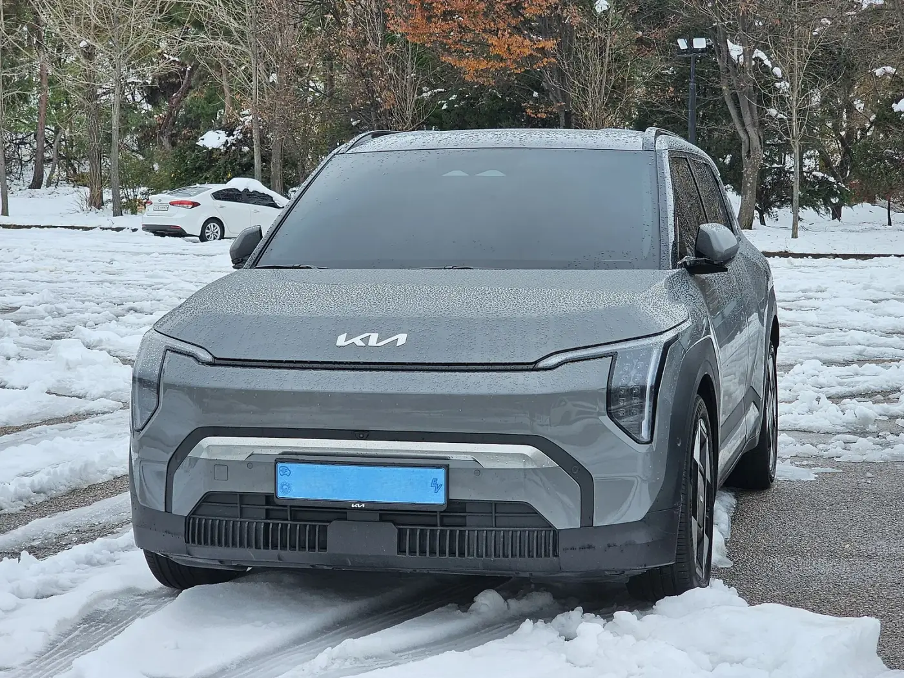
▲ 눈 내린 주차장의 셰일 그레이 EV3. 겨울 실측에서는 WLTP 대비 약 15% 짧은 거리를 달렸다 ⓒ Damian B Oh, Wikimedia Commons (CC BY-SA 4.0)
4. 충전 속도 — 공식 31분, 실측도 31분
EV3는 아이오닉5·EV6와 같은 800V가 아니라 400V 시스템을 쓴다. 기아가 출시 당시 밝힌 350kW 충전기 기준 10→80% 충전 시간은 롱레인지 31분, 스탠다드 29분(연구소 자체 측정)이다. 실측 결과는 공식 수치와 거의 같았다. 다만 최대 충전 출력은 120kW대에 머문다.
| 출처 | 조건 | 10→80% 시간 | 최대 출력 |
|---|---|---|---|
| 기아 공식 | 350kW 충전기, 자체 측정 | 31분 (스탠다드 29분) | — |
| NAF 실측 | 2025년 여름(노르웨이 사양) | 31분 1초 | 124kW (공칭 128kW 대비 -3.1%) |
| NAF 실측 | 2025년 겨울 | 30분 47초 | 122kW (공칭 대비 -4.7%) |
| CarExplorers 실측 | 스웨덴 겨울 테스트 | 약 33분 | 최대 135kW, 평탄한 곡선 |
NAF의 겨울 충전 시간이 여름과 거의 같다는 점은 배터리 온도 관리가 안정적이라는 뜻이다. 하지만 영국 Electrifying은 EV3의 최대 충전 출력(약 135kW)이 일부 경쟁차(BYD 아토3 에보 220kW)보다 낮다고 지적했다. 국내 시승기(블로터)와 미국 The Drive도 800V를 쓰지 않는 점을 아쉬워했다. 배터리가 큰 만큼 한 번에 오래 달리지만, 충전 한 번에 드는 시간은 30분 안팎을 잡아야 하는 차라는 뜻이다.
겨울 효율과 관련해 국내 사양에서 짚어둘 점이 있다. 영국에서는 히트펌프가 최상위 트림(GT-Line S)에만 900파운드 옵션으로 제공돼 Autocar와 Carwow가 아쉬운 점으로 꼽았다. 반면 국내 판매 EV3는 스탠다드 에어부터 GT까지 히트펌프와 배터리 히팅 시스템이 기본이다(기아 가격표). 영국 매체의 겨울 주행거리 평가에는 히트펌프가 없는 차가 섞여 있을 수 있다는 점을 감안해서 읽는 편이 좋다.
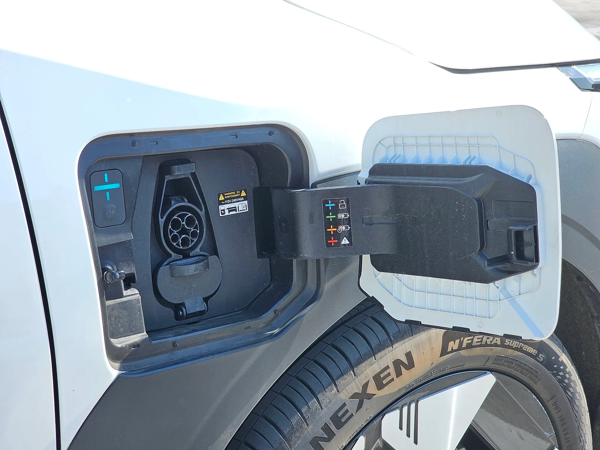
▲ 앞 펜더에 있는 EV3 충전구. 콤보 소켓 옆에 충전 상태 표시등이 있다 ⓒ Damian B Oh, Wikimedia Commons (CC BY-SA 4.0)
5. i-페달·승차감·실내 공간은 어떤가
i-페달 3.0은 EV3에서 거의 유일하게 반대 의견이 없는 항목이다. 회생제동 단계를 고르면 가속 페달 하나로 완전 정차까지 할 수 있다. 오토뷰는 스마트 회생제동이 앞차에 맞춰 알아서 멈추는 점을 좋게 봤고, 블로터는 도심 100km 주행에서 7.3km/kWh가 나온 주요 이유로 i-페달을 꼽았다. Auto Express는 동급 최고 수준의 회생제동 조작감이라고 평가했다. 스티어링 휠 뒤 패들로 회생 강도를 바꿀 수 있다.
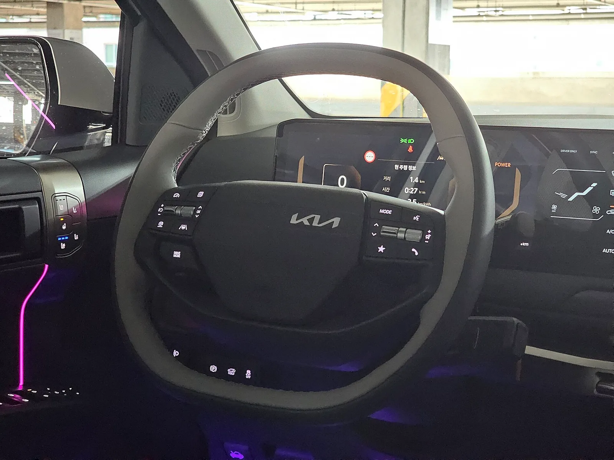
▲ EV3 운전석. 스티어링 휠 뒤 패들로 회생제동 단계를 조절한다 ⓒ Damian B Oh, Wikimedia Commons (CC BY-SA 4.0)
승차감은 앞에서 봤듯 '부드러움' 쪽으로 세팅됐다. 오토뷰는 방지턱을 넘을 때 유격감이 거의 없다고 봤다. 오토뷰가 잰 80km/h 실내 소음은 58.5dBA였다. 반면 운전 재미는 대부분의 해외 매체가 평범하다고 평가했다. 오토뷰의 가속·제동 계측치는 0→100km/h 7.72초, 100km/h 급제동 38.62~40.13m였다. 일상 주행에는 충분하지만 스포티함을 내세우는 차는 아니다.
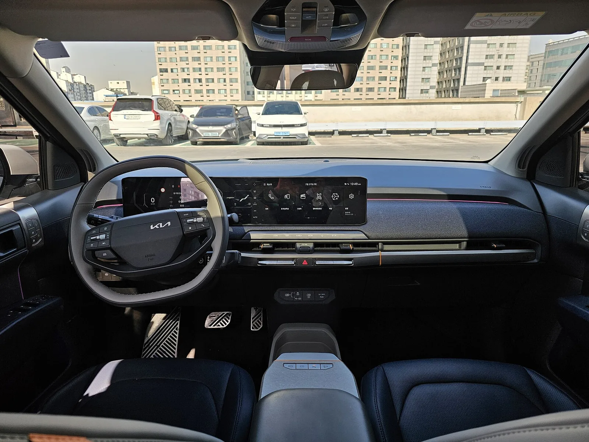
▲ EV3 어스 트림의 실내. 계기판과 인포테인먼트 화면을 한 장처럼 이은 디스플레이가 들어갔다 ⓒ Damian B Oh, Wikimedia Commons (CC BY-SA 4.0)
공간은 크기에 비해 넉넉하다는 평이 많다. 공식 트렁크 용량은 460L(VDA)이고 보닛 아래에 25L 프렁크가 따로 있다. Carwow는 키 6피트(약 183cm) 성인 두 명이 뒷좌석에 편하게 앉는다고 평가했다. 반면 Auto Express는 트렁크를 키우느라 뒷좌석 편안함을 일부 양보했다고 봤고, Carbuyer는 뒷좌석에 카시트 세 개를 나란히 놓기는 어렵다고 지적했다. 아이 한두 명 가족에게는 충분하고, 세 명 이상이면 EV5급을 보는 편이 낫다는 해석이 자연스럽다.
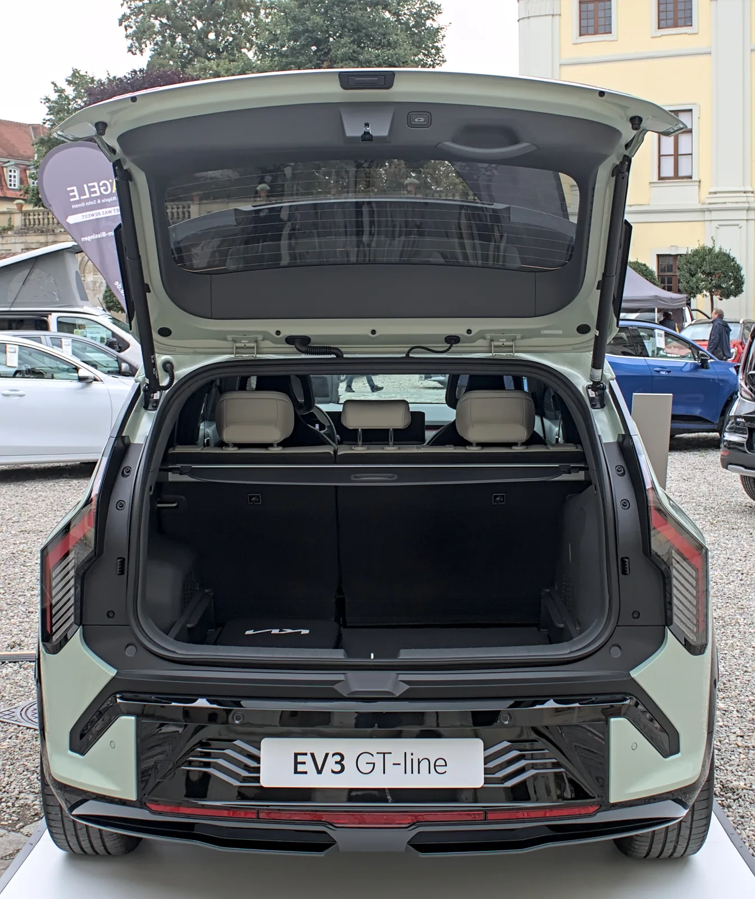
▲ 테일게이트를 연 EV3 GT-라인의 트렁크. 사진은 독일 전시회에 나온 유럽 사양이다 ⓒ Alexander-93, Wikimedia Commons (CC BY-SA 4.0)
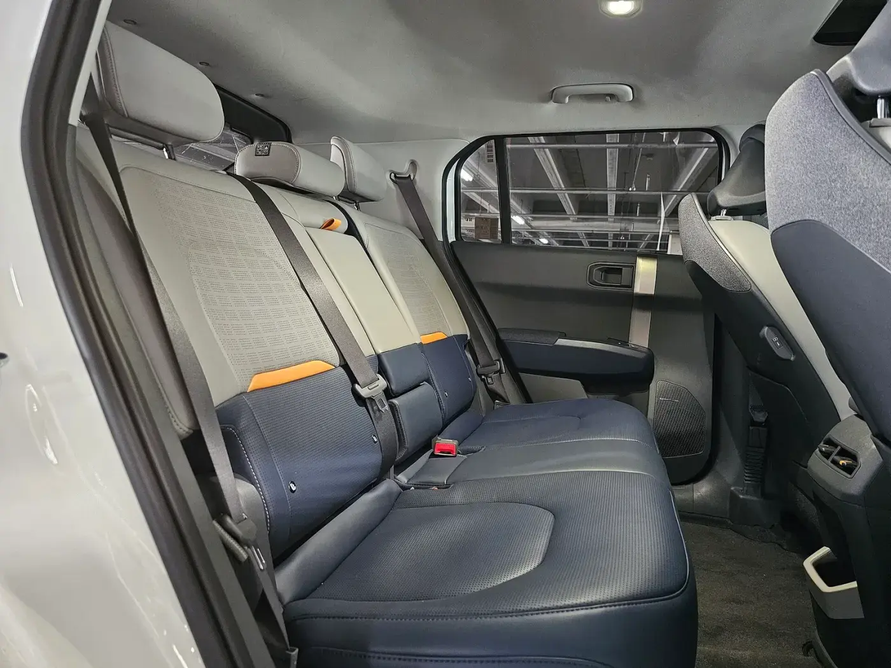
▲ EV3 뒷좌석. 바닥이 평평해 가운데 자리의 발 공간이 확보된다 ⓒ Damian B Oh, Wikimedia Commons (CC BY-SA 4.0)
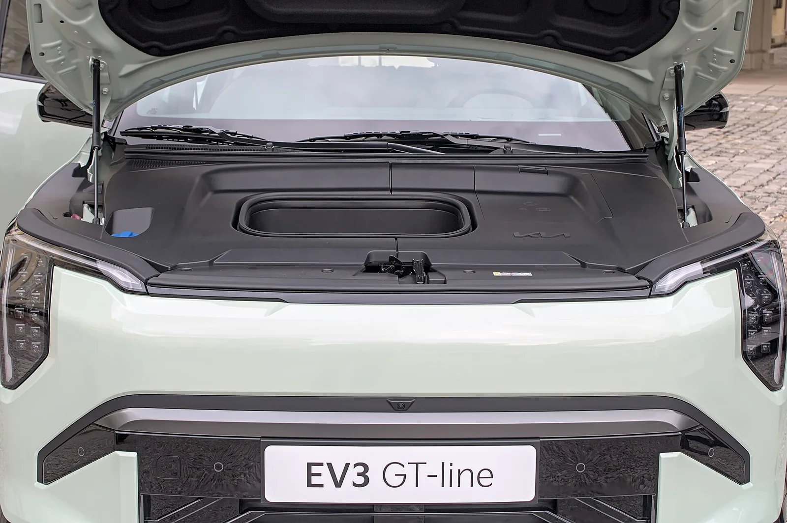
▲ 보닛 아래 25L 프렁크. 사진은 독일 전시회에 나온 유럽 사양 GT-라인이다 ⓒ Alexander-93, Wikimedia Commons (CC BY-SA 4.0)
✅ 오너 평가는 어떤가
2025년 5월 토픽트리 보도에 따르면 네이버 마이카 오너평가에서 EV3는 10점 만점에 9.4점을 받았다. 항목별로는 주행감 9.8, 주행거리 9.7, 디자인 9.7, 품질 9.5였다. 보도에는 참여 인원이 나오지 않으며, 2026년 9월 현재 점수는 달라졌을 수 있다. 매체 평가와 마찬가지로 오너들도 주행감과 주행거리에 가장 높은 점수를 줬다.
6. 2026년 9월 가격표와 트림·배터리 선택
기아가 공개한 2026년 9월 1일 기준 가격표다. 2026년형은 2월 연식변경 때 가격을 유지하면서 페달 오조작 안전 보조, 새 디스플레이 GUI, 100W USB-C를 더했고, 어스 이상에는 듀얼 무선충전을 넣었다. 보조금을 반영한 실구매가는 EV3 실구매가 분석 기사와 지역별 보조금 비교 기사에서 따로 다뤘다.
| 배터리 | 에어 | 어스 | GT-라인 |
|---|---|---|---|
| 스탠다드 58.3kWh (350km) | 3,995만 원 (4,203만) | 4,390만 원 (4,618만) | 4,475만 원 (4,708만) |
| 롱레인지 81.4kWh (501km) | 4,415만 원 (4,645만) | 4,810만 원 (5,060만) | 4,895만 원 (5,150만) |
| EV3 GT (81.4kWh, 듀얼모터 AWD, 410km) | 5,375만 원 (5,654만) | ||
매체 평가와 가격표를 함께 놓고 보면 선택지는 비교적 분명하다.
| 선택 | 이런 사람에게 | 근거 |
|---|---|---|
| 롱레인지 에어 (추천) | 대부분의 구매자 | 스탠다드 에어보다 420만 원 비싸지만 인증 주행거리가 151km(43%) 늘어난다. Autocar 비교에서 두 배터리의 효율 차이가 거의 없었고, 17인치 휠은 승차감(Top Gear)과 주행거리 모두에 유리하다. |
| 스탠다드 에어 | 집·회사 완속 충전이 가능하고 하루 주행이 짧은 도심 운전자 | 국내 인증 350km(고속도로 313km)로 출퇴근용은 충분하다. 다만 장거리 여행이 잦으면 급속충전 횟수가 늘어난다. |
| 어스·GT-라인 롱레인지 | 편의사양과 디자인을 중시하는 사람 | 19인치 휠을 고르면 주행거리가 줄고(상온 복합 501→478km, 저온 401→382km) 승차감도 단단해진다는 점을 감안해야 한다. |
| EV3 GT | 성능이 우선이고 보조금 감소를 감수할 수 있는 사람 | 합산 215kW(292마력)·468Nm 듀얼모터. 가격이 5,500만 원 기준선에 가까워 옵션을 더하면 국고보조금이 50%로 줄 수 있다. 자세한 내용은 EV3 GT 보조금 기사를 보면 된다. |
🛡️ 안전 등급과 배터리 보증
Euro NCAP(2025년 5월 발표): 유럽 사양 기본 장비 기준 별 4개, 선택 사양인 세이프티 팩을 더하면 별 5개다. 세이프티 팩 기준 항목별 점수는 성인 탑승자 보호 83%, 어린이 탑승자 보호 84%, 보행자 등 취약 도로 이용자 보호 78%, 안전 보조 78%였다. 유럽 사양 결과이므로 국내 사양의 장비 구성과는 차이가 있을 수 있다.
배터리 보증: 기아는 국내에서 고전압 배터리에 10년/20만km 보증을 제공한다(개인 최초 구매자 기준). 영국은 8년/10만 마일 동안 용량 70% 유지를 보증한다(Autocar).
EV3의 미국 가격과 EPA 주행거리는 EV3 미국 가격·주행거리 기사에서, 형제차 EV5와의 판매 차이는 EV3·EV5 판매 격차 분석에서 다뤘다.
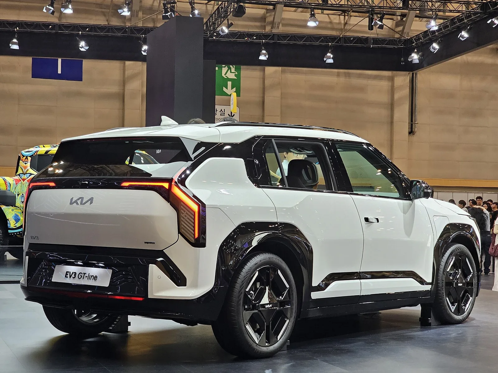
▲ 2024 부산모빌리티쇼에 전시된 EV3 GT-라인의 뒷모습 ⓒ Damian B Oh, Wikimedia Commons (CC BY-SA 4.0)
7. 경쟁차와 비교하면
EV3를 살 때 함께 비교하는 차는 대체로 형제차 EV5, 수입 베스트셀러 모델Y, 값이 싼 BYD 돌핀과 캐스퍼 일렉트릭, 그리고 유럽에서 먼저 나온 아이오닉3다. 가격은 2026년 9월 기준 공식 발표·보도 가격이다.
| 모델 | 가격 | 배터리 | 주행거리 | EV3 대비 포지션 |
|---|---|---|---|---|
| 기아 EV3 롱레인지 에어 | 4,415만 원 | 81.4kWh | 501km | 기준 |
| 기아 EV5 에어 롱레인지 | 4,575만 원 | 81.4kWh | 460km | 160만 원 더 내고 한 체급 큰 실내. 주행거리는 EV3가 41km 더 길다 |
| 테슬라 모델Y 프리미엄 RWD | 4,999만 원 | LFP | 400km | 충전 인프라와 소프트웨어가 강점. 가격은 584만 원 비싸고 인증 거리는 짧다 |
| BYD 돌핀 액티브 | 2,920만 원 | 60.48kWh | 354km (저온 282km) | 가격이 1,500만 원가량 낮은 해치백. 주행거리와 공간은 EV3 스탠다드에 가깝다 |
| 현대 캐스퍼 일렉트릭 인스퍼레이션 | 3,212만 원 | 49kWh | 315km | 도심용 경형. EV3 스탠다드보다 783만 원 싸지만 공간과 거리는 한 단계 아래 |
| 현대 아이오닉3 | 국내 미출시 | 42.2 / 61kWh | WLTP 344 / 496km | EV3처럼 400V를 쓴 현대차그룹 소형 전기차. 국내 출시 계획은 미정 |
숫자로 보면 EV3 롱레인지의 강점은 '4천만 원대 초반에 인증 500km'라는 조합이다. 표의 차들 가운데 이 가격대에서 국내 인증 500km를 넘는 차는 EV3 롱레인지뿐이다. 약점은 충전 속도와 운전 재미다. 모델Y는 가격이 더 높은 대신 자체 충전 네트워크와 소프트웨어가 강점으로 꼽힌다(모델Y 리뷰 종합 참고). 돌핀과 캐스퍼 일렉트릭은 가격에서 크게 앞서지만, 주행거리가 EV3 스탠다드(350km) 수준이거나 그 아래다. 아이오닉3는 유럽 리뷰 기준으로 EV3와 비슷한 콘셉트지만(아이오닉3 해외 리뷰 종합) 아직 국내에서는 살 수 없다.
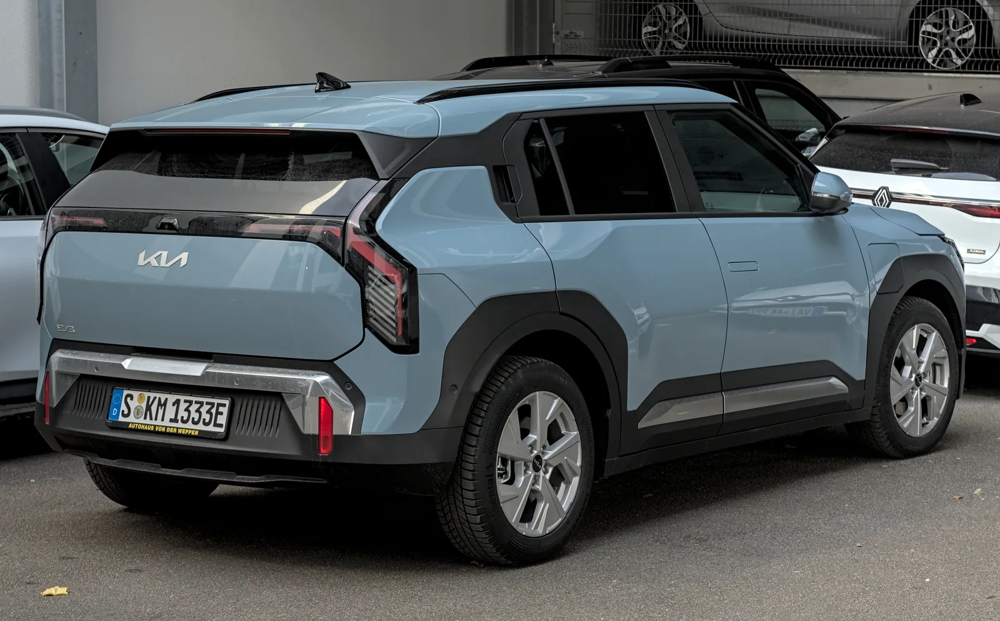
▲ 독일 슈투트가르트에서 촬영한 유럽 사양 EV3의 뒷모습 ⓒ Alexander Migl, Wikimedia Commons (CC BY-SA 4.0)
8. 이런 사람에게 맞고, 이런 사람에겐 안 맞는다
| 잘 맞는 사람 | 다시 생각해볼 사람 |
|---|---|
| 충전을 자주 하기 싫고 한 번에 멀리 가고 싶은 사람(롱레인지 인증 501km, 국도 실측 전비 6.8~7.3km/kWh) | 고속도로 장거리를 자주 달리며 충전 시간을 최소화하고 싶은 사람(10→80% 약 31분, 최대 120kW대) |
| 편안한 승차감과 조용한 실내를 중시하는 사람 | 코너링과 스티어링의 재미를 원하는 사람(해외 매체 다수가 평범하다고 평가) |
| 원페달 주행에 익숙하거나 익숙해지고 싶은 도심 운전자(i-페달 3.0) | 잦은 경고음과 운전자 보조 개입에 민감한 사람 |
| 아이 한두 명의 소가족, 1~2인 가구(트렁크 460L + 프렁크 25L) | 뒷좌석에 카시트를 세 개 놓아야 하는 가족(EV5급 이상 추천) |
| 보조금 100% 구간에서 4천만 원대 초반 전기 SUV를 찾는 사람 | 고성능을 원해 GT를 고르면서 보조금까지 챙기려는 사람 |
9. 요약
국내외 시승기·실측 14편을 모아 보니, EV3는 '무엇이든 무난하게 잘하는 차'로 평가가 모였다. 주행거리·승차감·i-페달·공간은 대부분의 매체가 칭찬했고, 운전 재미·급속충전 속도·잦은 경고음은 공통으로 지적됐다.
주행거리는 조건에 따라 크게 달라진다. 여름철 국도·도심에서는 전비가 6.8~7.3km/kWh로 19인치 인증치(5.1)를 크게 넘었다. 100km/h 고속도로 정속 주행에서는 약 415~431km로, 국내 고속도로 인증치 447km와 비슷했다. 영하 6~7℃의 노르웨이 겨울 테스트에서도 WLTP 대비 약 15% 줄어든 약 500km를 달렸고, 국내 저온 인증치는 401km다.
2026년 9월 가격은 스탠다드 에어 3,995만 원, 롱레인지 에어 4,415만 원, GT 5,375만 원(세제혜택 후)이다. 가격 대비 주행거리와 승차감을 함께 따지면 17인치 휠의 롱레인지 에어가 가장 합리적이다. 충전 속도(10→80% 약 31분)와 운전 재미를 중시한다면 경쟁차도 함께 비교해볼 만하다.